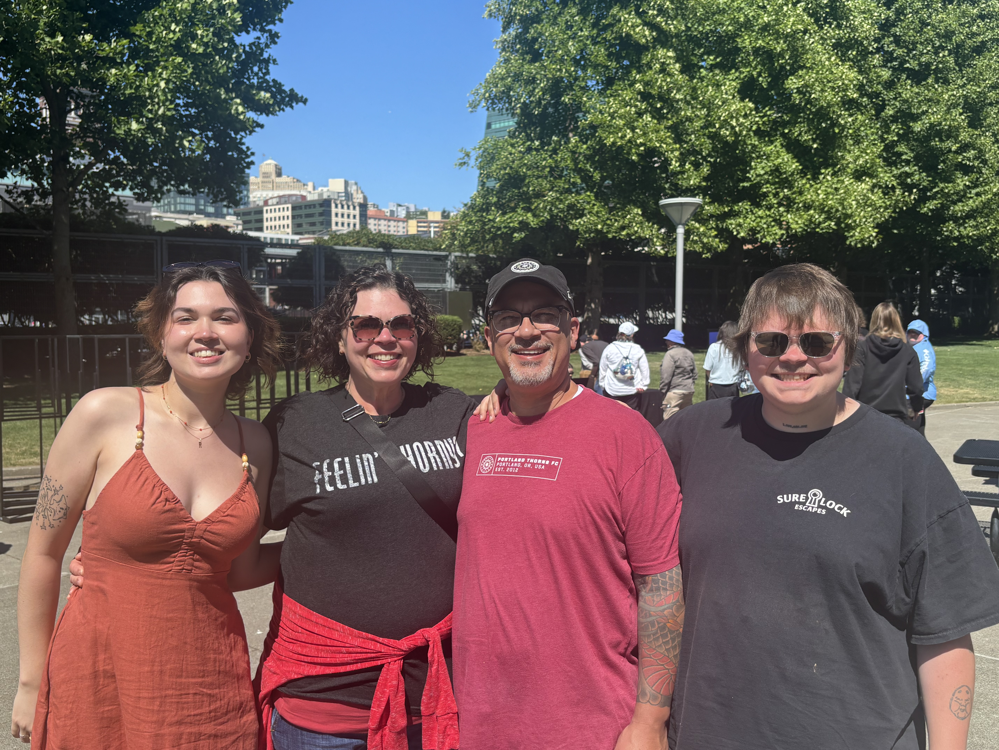
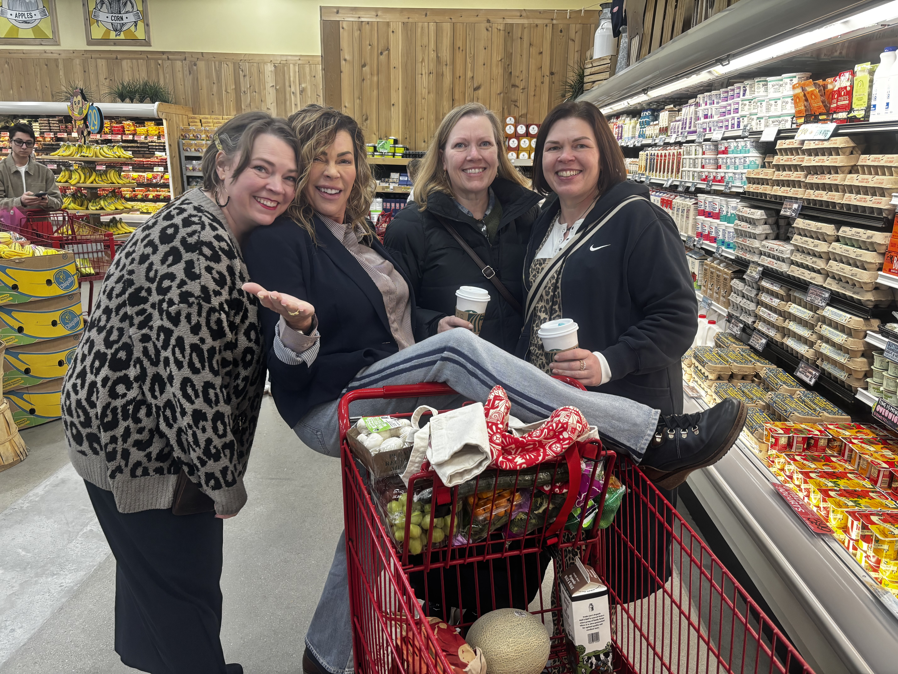
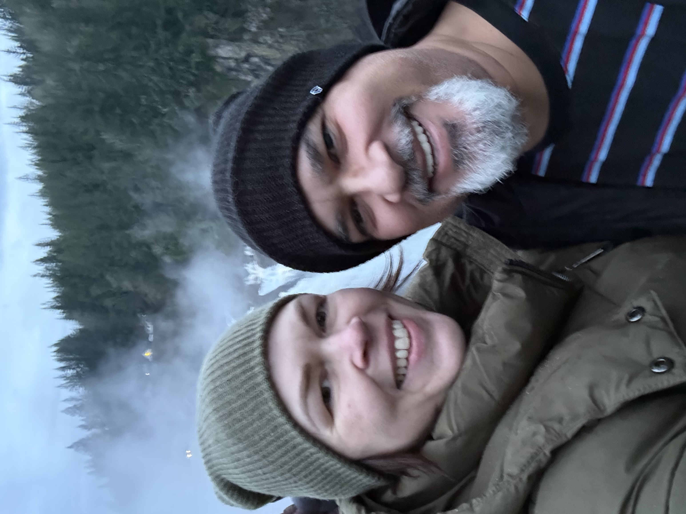

About Heather
Born and raised in Seattle, Heather has always had a strong connection to the Pacific Northwest. She describes herself as a realist who is passionate, direct, fiercely loyal, and always willing to look for a better way of doing things. Family and friends know her for her generosity, sense of humor, and enthusiasm for the things she loves, from music and coffee to gardening and spending time with the people closest to her.
Family
Family has remained one of the most important parts of Heather's life. As a mother, she especially enjoys watching her children grow into independent, creative individuals. She loves experiencing the world through their perspectives and appreciates both the similarities they share with her and the qualities that make each of them unique.


Family Connections
Her relationship with her siblings is equally important. Although they now live throughout Washington, Oregon, and Idaho, they continue to come together to celebrate their family and create new memories.
Growth & Learning
Her dedication to learning extends beyond gardening. Heather completed both her bachelor's and master's degrees in her thirties while raising children and moving around the country. For her, those accomplishments represent more than education; they demonstrate the importance of hard work, resilience, and the willingness to change direction.
She hopes her family sees through her example that it is never too late to learn something new, pursue a different path, or create a life that feels meaningful.
